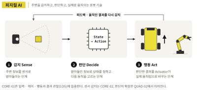

SAMPLE · 본문 미리보기
로봇을 움직이는 순간부터
피지컬 AI는 시작됩니다
프롤로그와 CHAPTER 01 앞부분 일부를 옮겼습니다.
프롤로그
로봇을 움직이는 순간부터 피지컬 AI는 시작됩니다
완성된 4륜 독립 구동·독립 조향 이동 로봇을 불러오고 W 키를 누르면 네 바퀴가 돌아가며 차체가 앞으로 움직입니다. Z나 C를 누르면 바퀴 방향이 바뀐 뒤 차체가 제자리에서 회전하고, Q나 E를 누르면 네 바퀴가 같은 대각선 방향으로 정렬됩니다. 1번 키를 누르면 차체에 접혀 있던 화면이 펼쳐집니다.
첫 장면에서는 키를 눌렀을 때 실제로 무엇이 움직였는지부터 봅니다. 긴 Python 코드는 뒤에서 필요한 만큼만 엽니다. 바퀴는 곧바로 돌았는지, 방향을 바꾸는 데 시간이 걸렸는지, 키를 놓았을 때 차체는 어떻게 멈추는지, 화면은 어떤 상태에서 어떤 정보를 보여 주는지를 먼저 관찰합니다.
피지컬 AI란?
피지컬 AI는 주변이나 사용자의 입력을 받아 현재 상태를 파악하고, 다음 행동을 정한 뒤, 그 결과를 모터·서보 같은 Actuator를 통해 실제 움직임으로 바꾸는 시스템을 다룹니다. 움직인 결과는 다시 환경과 입력에 영향을 주고, 다음 제어의 근거가 됩니다.

CORE-01은 이 전체 고리를 한 번에 구현하는 책은 아닙니다. 환경을 스스로 감지하는 Sensor와 학습 기반 Decision을 앞세우기보다, 입력 → 제어 → Actuator → 물리적 움직임 → 관찰과 LOG를 먼저 분리해 봅니다. 키보드 입력은 사람이 주는 입력이고, Script의 규칙은 미리 정한 제어입니다. 그래서 CORE-01의 로봇을 센서 기반 자율 AI 로봇처럼 과장하지 않습니다. 대신 이후 센서·상태·판단이 더해져도 그대로 남는 제어의 뼈대를 익힙니다.
PART 1 · EXPERIENCE
CHAPTER 01. Controls Mapping으로 로봇을 어떻게 움직일까
첫 실습에서는 코드를 실행하지 않습니다. Book-CORE-01-CONTROLS에 준비된 Controls Mapping만으로 로봇을 움직입니다. 키를 누르면 차체가 바로 반응하고, 같은 입력이 어떤 방향 변화로 이어지는지 눈으로 확인합니다.
이 장에서 다루는 주행 키는 W·S·A·D·Z·C입니다. 1번 키는 접혀 있는 안내 화면판을 펼치거나 접는 Toggle Screen입니다. Q·E 대각선 이동은 CHAPTER 02에서 Script 로봇과 함께 처음 다룹니다.
| 키 | 기대 동작 | 관찰 포인트 | 완료 기준 |
|---|---|---|---|
| W | 전진 | 차체 앞쪽·진행 방향 | 전진 장면 확인 |
| S | 후진 | W 반대 진행 방향 | 후진 장면 확인 |
| A | 왼쪽 방향 전환 | 차체 회전·이동 방식 | Z와 차이 기록 |
| D | 오른쪽 방향 전환 | 차체 회전·이동 방식 | C와 차이 기록 |
| Z | 제자리 좌회전 | 회전 중심·종료 위치 | A와 차이 기록 |
| C | 제자리 우회전 | 회전 중심·종료 위치 | D와 차이 기록 |
| 1 | Toggle Screen | Folded·Deployed | 전환 방식 확인 |
1.1 W·S 전진·후진 — 움직임과 정지
차체의 앞쪽을 먼저 정한 뒤 W를 누릅니다. 로봇은 앞쪽으로 나가고, S를 누르면 반대 방향으로 물러납니다. 여기서는 얼마나 빨리 갔는지를 재지 않습니다. 차체가 어느 방향으로 움직였는지, 바퀴 네 개가 같은 흐름으로 돌았는지, 멈출 때 어떤 장면이 남는지를 먼저 확인합니다.
W를 누르는 동안에는 차체가 한쪽으로 치우치지 않는지, S에서는 같은 자리에서 반대 방향으로 움직이는지를 봅니다. 키를 놓은 뒤에는 차체가 곧바로 멈추는지, 조금 더 밀려 나가는지 기록합니다. 이 장면이 뒤에서 Script 로봇의 정지 동작과 비교할 기준이 됩니다.
지면 미리보기
실제 책 지면 일부를 이미지로 확인할 수 있습니다.
더 많은 장면은 웹 자료 페이지의 실행 영상에서 볼 수 있습니다. 전체 설명과 실습은 책에서 이어집니다.